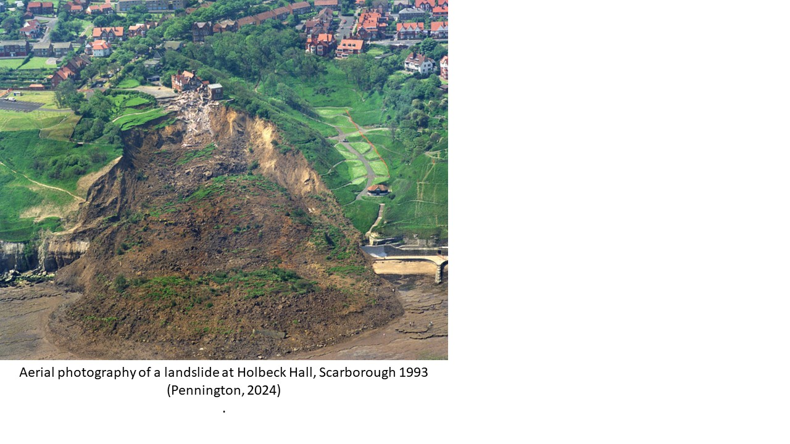

Space Weather
Patch Seven
Whilst natural geological processes are hazardous, anthropogenic changes to the lithosphere can be hazardous without rigorous investigative work to reduce risk. Disastrous events such as the 1864 Dale Dyke Dam Collapse, Sheffield killing 240 people (Sheffield City Council, 2015) as well as numerous mine collapses brought about requirements to increase the integrity of infrastructure in the UK, such as the Reservoirs Act 1975 and Building Regulations 2010.
All human infrastructure built on ground requires surveys to understand the associated belowground risks of construction. Those that carry out groundwork surveys require an understanding of geological structures, materials and processes. Investigative work is often carried out after surveys to determine appropriate engineering techniques to prevent failure during construction. Average spending on site investigations ranges between 0.02-0.2 % of total construction costs (Skipper, 2013).
Ground investigations drill boreholes, gather and analyse samples to reveal geological qualities, this information then informs the design and safety measures of infrastructure. Survey’s need to be completed on a site-by-site basis due to the variability, caused by multiple factors, in ground conditions. Firstly, primary variability is determined by the depositional conditions that led to the rock’s formation. Secondly, secondary variability is caused by weathering and other processes not long after initial deposition. Finally, later variability is later impacts such as glaciation and faulting. Understanding the events that produced present geology, i.e. the presence of shallow seas during the carboniferous in areas of England and Wales as well as the material deposited (Aretz et al., 2020) has importance as it can explain this variability (Skipper, 2013). For example, Holbeck Hall Landslide, Scarbrough 1993 where glacial till sitting on a Middle Jurrassic aged cliff led to a 200 m wide and 135 m long flow of of sandy, silty clay (Pennington, 2024).
Patch Seven